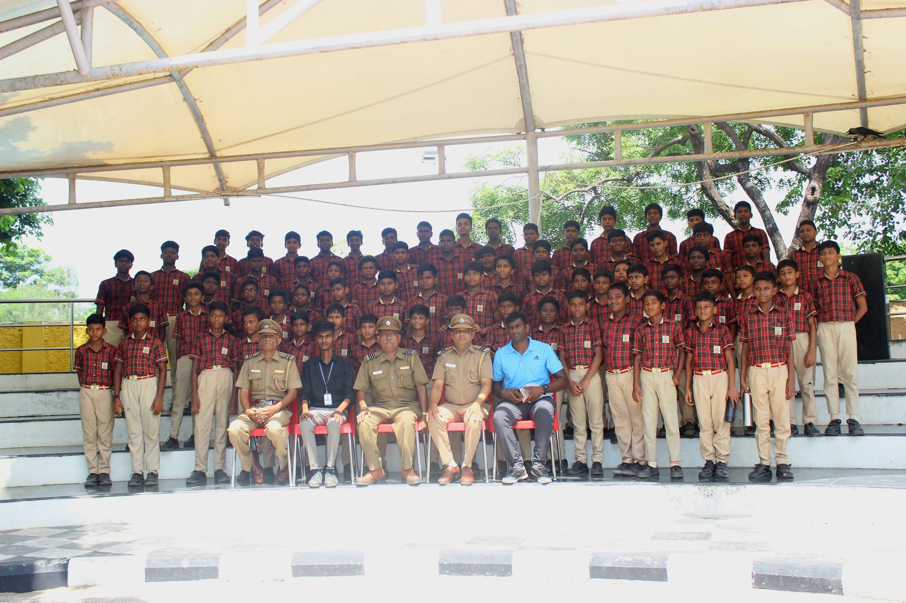
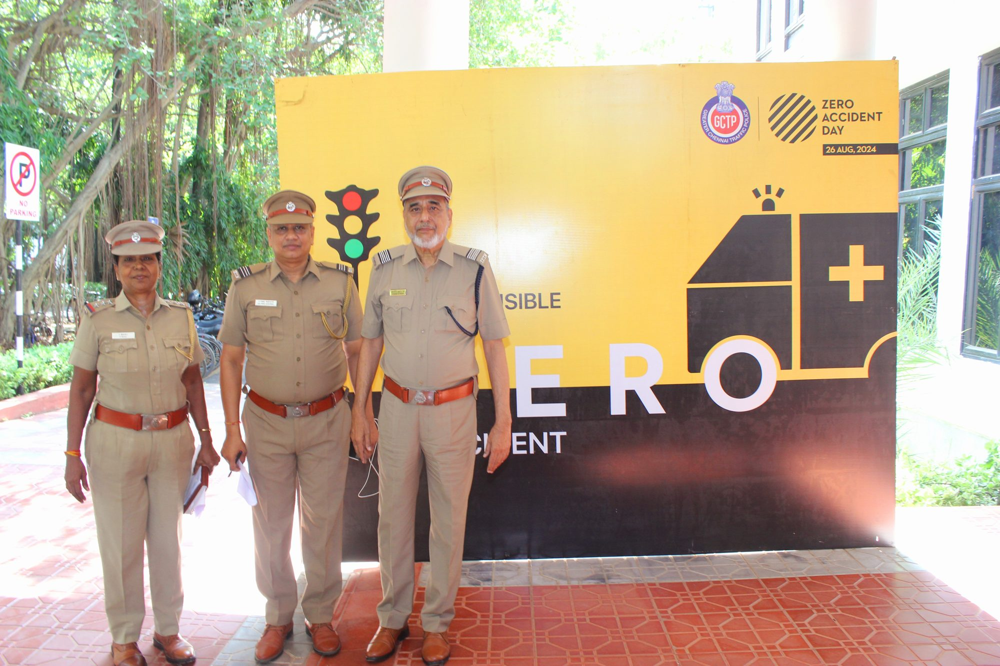
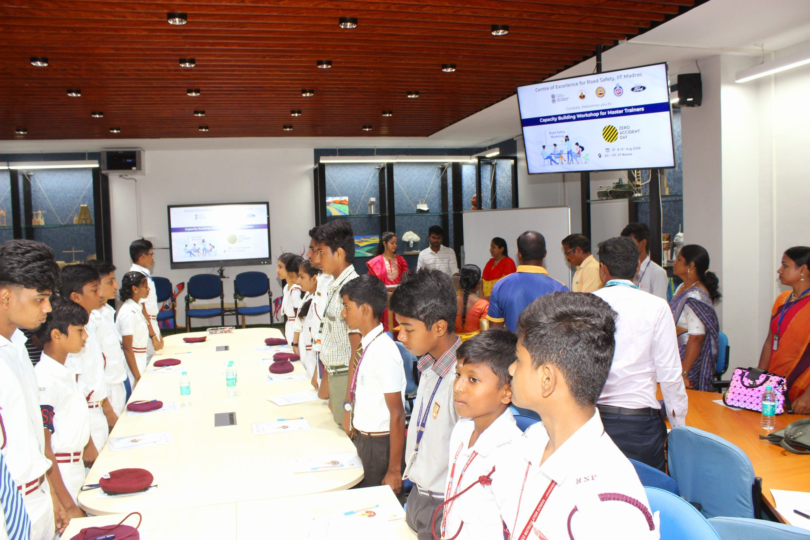
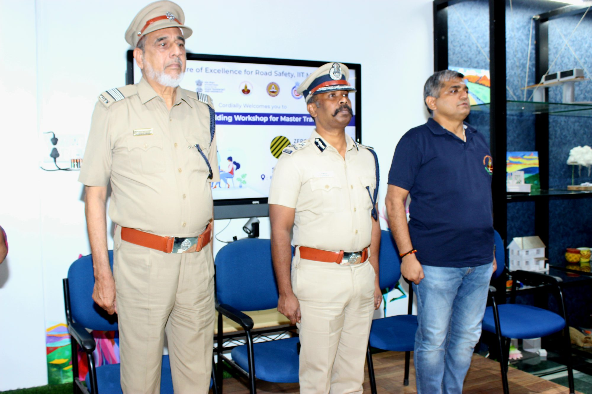
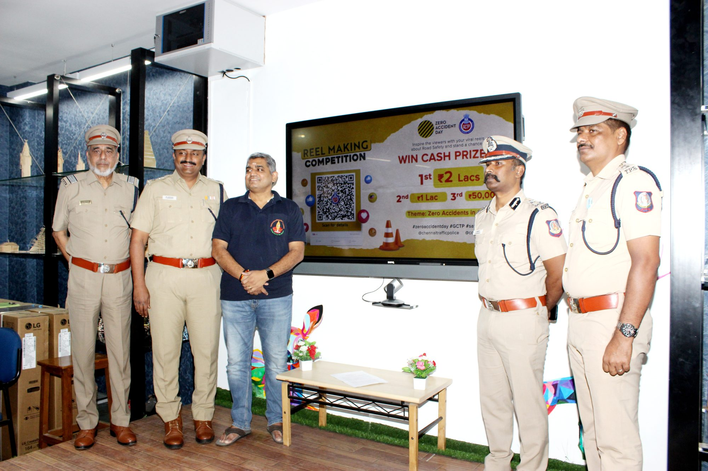
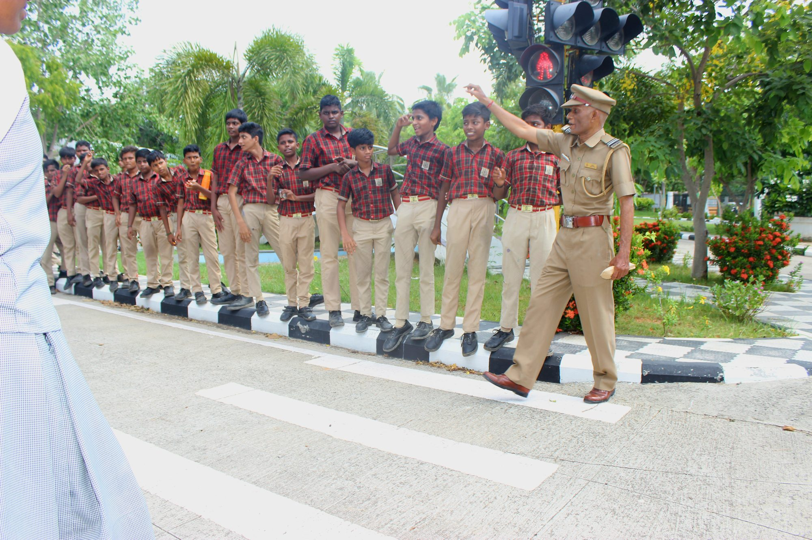
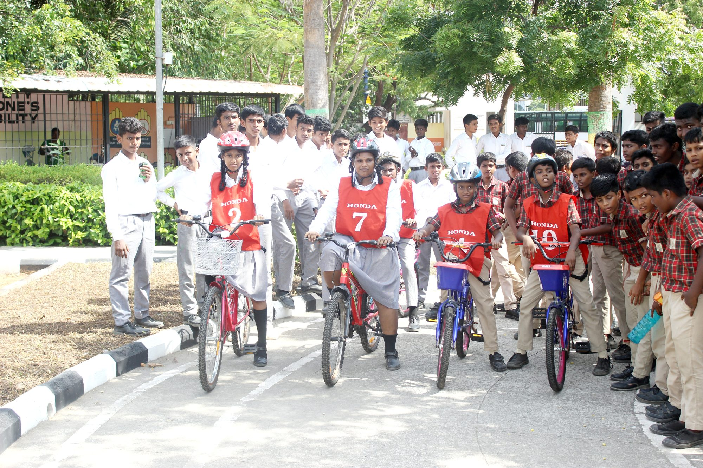

Programmes & Public Outreach
Beyond the Road Safety Patrol, TPTWO runs public-facing programmes that carry road safety awareness directly into communities across Greater Chennai.
Ongoing & Active

Helmet Awareness
Campaigns promoting consistent helmet use among riders and pillions, conducted at key junctions and public spaces across Greater Chennai — a core part of TPTWO's ongoing road safety outreach.

Cycle Rally
Community cycling events carrying a road-safety message across the city, bringing together volunteers, students, and the public in a shared show of commitment to safer roads.

Traffic Park, Marina Beach
A hands-on space for practical road-safety education, where students and the public can experience realistic traffic scenarios in a safe, controlled environment.

School Awareness
Direct engagement with schools across the city, bringing road safety education, pedestrian awareness, and responsible road behaviour into the classroom for students beyond the RSP programme.
Pending Reconfirmation
These programmes appear on TPTWO's earlier records. Current activity status is being reconfirmed with the organisation.

Drunken Drive Check
In support of Greater Chennai Police, TPTWO assists with distributing awareness pamphlets across the city on the dangers of drunk driving, helping reinforce the message at a grassroots level.

Pedestrian Awareness Campaign
A dedicated awareness effort focused on pedestrian safety, encouraging safer road-crossing habits and greater care among people walking on Chennai's streets.
Want to Bring a Programme to Your Community?
Schools, residents' associations, and community groups can reach out to TPTWO to learn more about hosting or participating in these programmes.
Contact Us